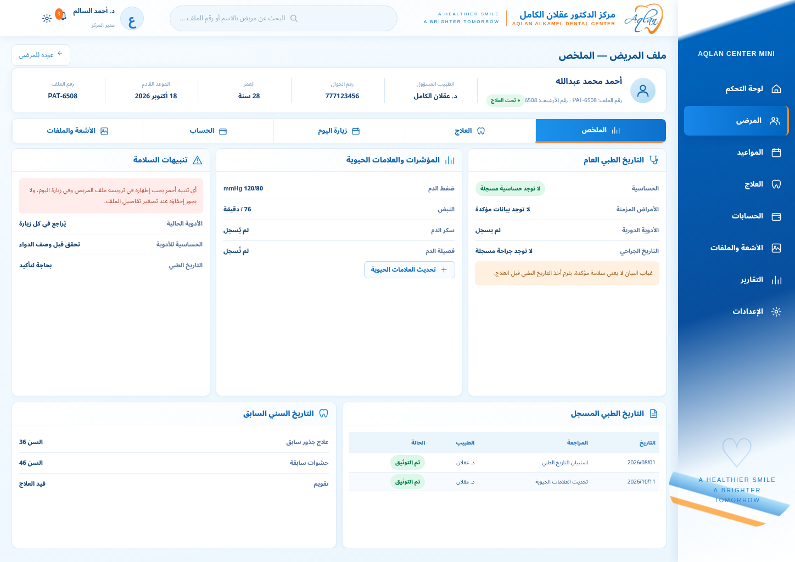
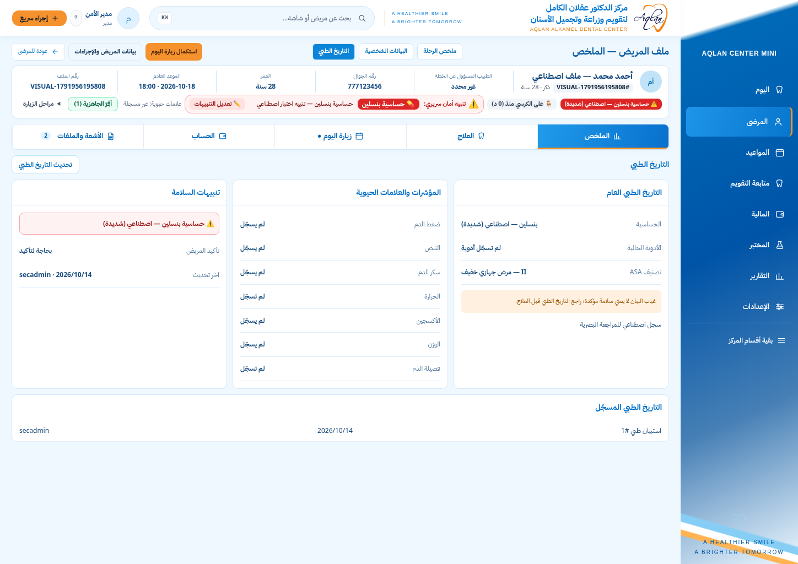
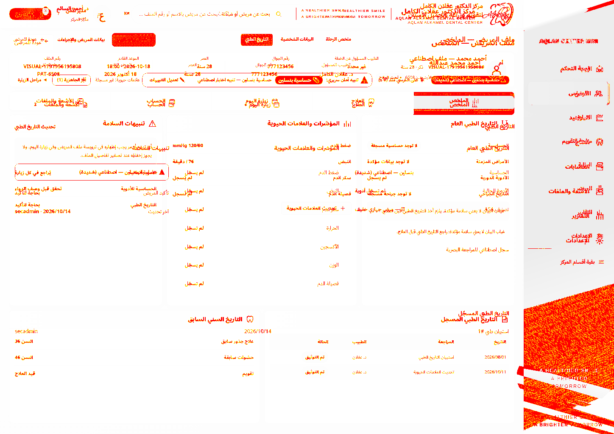

التاريخ الطبي
المرجع المعتمد · 1448px
التطبيق المحلي الفعلي · بيانات اصطناعية
الصفحة كاملة — تشمل المحتوى أسفل الشاشة

فرق البكسلات — تشخيص للفروقات، وليس شهادة مطابقة
95519 pixels (ratio 0.07 of all image pixels) are different.
